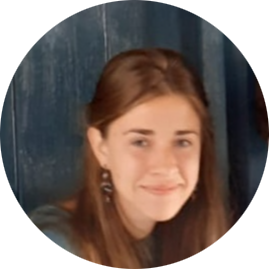

|  |
María Salto Galdón
Final year BESS student.
I consider myself a resilient, enthusiatic and open-minded person.I have curiosity for the world around me, its people, nature and history and for the future yet to be created. I love meeting new people and learn about their experiences, their culture and the dreams they have for their lives and the world we all live in. Despite its many blessings, there are challenges yet to be solved. I believe that one of my greatest aims in life is working to transform some of these into opportunities for greater growth. I believe that I and others around me have an infinite potential to grow and be responsible inhabitants of this planet.
|